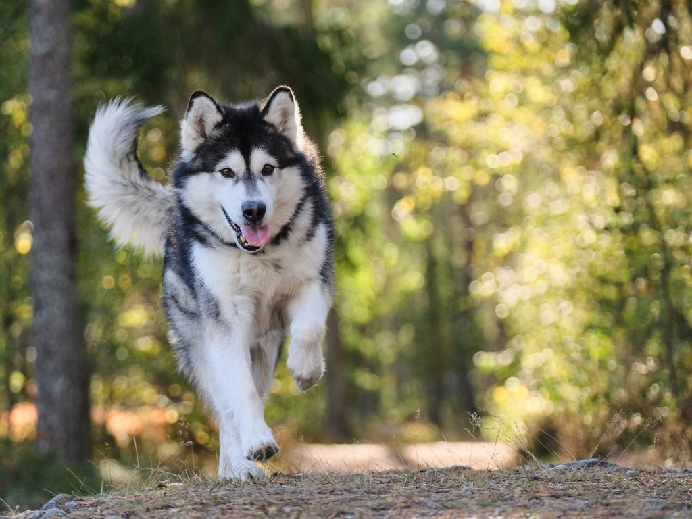
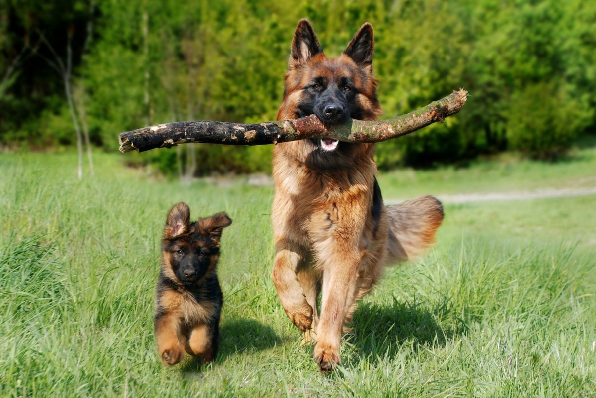

Bienvenidos a nuestra guardería para perros y gatos
Residencia para Perros y Gatos Caan Mascotas fue fundada en Fuengirola, Provincia de Málaga, en el año 2020, contamos con años de experiencia en el sector del cuidado de nuestros amigos caninos y felinos.
Comida personalizada
Si tu perro o gato necesitan de una alimentación especial, nosotros nos encargamos. Solo tendrás que traer cada dosis por separado y nosotros nos ocupamos del resto. Si tiene 3 dosis diarias, 3 bolsitas con cada cantidad.
Actividad y ejercicio
¿Quieres que tu perro mantenga su nivel de ejercicio o actividad? Nosotros disponemos en nuestras instalaciones una parcela de juegos totalmente vallada con circuito de entrenamiento donde tu mascota podrá correr y jugar libremente. Además puedes traerle sus juguetes favoritos.

Cuidados
Nos dedicamos a ellos como si estuvieran en nuestra casa. Esa siempre ha sido nuestra pauta a seguir con todos nuestros inquilinos. Siempre hay alguien pendiente de tu mascota y de nuestras instalaciones. Estamos abiertos todos los días del año y contamos con un guarda nocturno.
